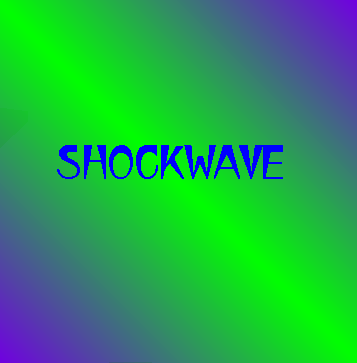

Shockwave
This ride is a great coaster the first
time you ride it, but it gets more boring each additional time
you ride it. It beats you up, though. After the third of seven
loops, it brakes you to an almost complete stop, throwing your
neck and legs God knows where. Trust me, if you have neck or back
problems, this is not the ride for you. If you want fun, go on
it. But be prepared for a more boring ride every other time. It's
my opinion. Some people like it. It depends on what you like.
Back to the Rides